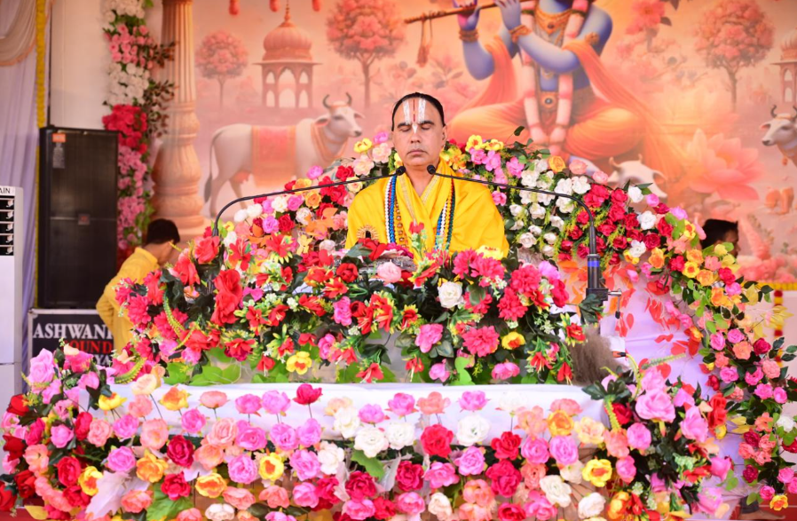
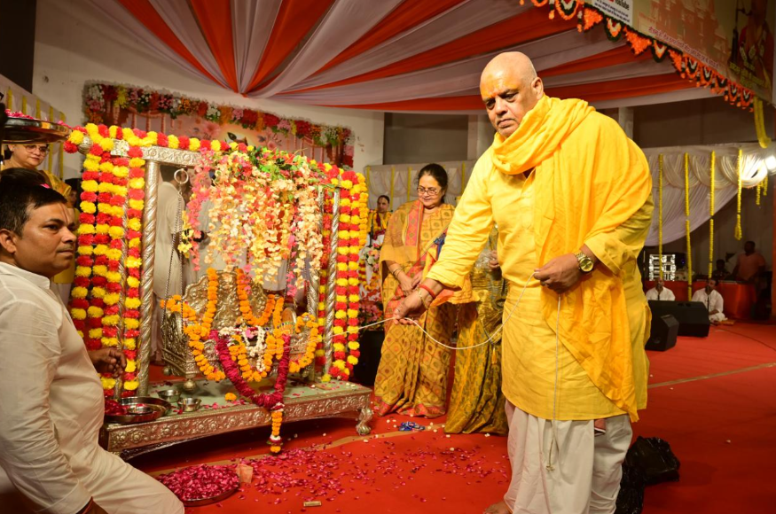
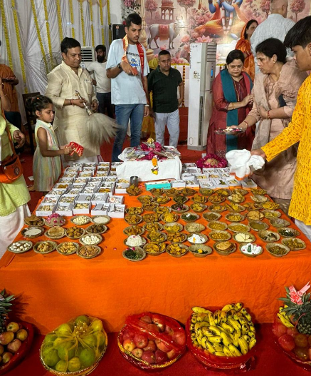

The Divine Legends of Pandit Umapati Tripathi Ji Maharaj
The history of Teen Kalash Tiwari Mandir is inseparable from the spiritual aura of its founder, Pandit Umapati Tripathi Ji Maharaj. He is remembered in local tradition as a realised saint whose life was dedicated to Lord Ram, Vedic learning and the spiritual welfare of Ayodhya Dham.
The “Vashistha Avatar” Upadhi
In Ayodhya’s spiritual tradition, the title “Vashistha Avatar” is understood as an exceptional recognition. According to local lore, Ayodhya’s saints and Vedic scholars bestowed it on Pandit Umapati Ji after observing his command of ritual, Nyaya Shastra, Ramayana discourse and righteous conduct. His voice during Vedic recitation was said to carry an ancient authority that reminded listeners of Maharishi Vashistha, the Kul-Guru of the Ikshvaku dynasty.
The Sacred Sarayu & the deepening of Bhakti
One widely shared story tells of a severe monsoon flood near the Sarayu. The saint, absorbed in midnight meditation, is said to have stood at the rising waters and recited a Vedic protection mantra. Devotees recount that the surge receded from that point, deepening the community’s faith in his tapasya and protection.
The vision of the three Kalash
Tradition says that during yogic sleep, Pandit Umapati Ji received a divine vision of Lord Rama’s celestial court and three pillars representing past, present and future under Dharma. Inspired by this vision, the temple’s signature three brass Kalash were established as a symbol of faith and spiritual protection.
हिंदी संस्करण
तीन कलश तिवारी मंदिर का इतिहास इसके संस्थापक पंडित उमापति त्रिपाठी जी महाराज की अलौकिक आध्यात्मिक आभा और तपस्या से जुड़ा है। अयोध्या के संतों और वेदविदों की सभा द्वारा उन्हें “वसिष्ठ अवतार” की उपाधि से विभूषित किया गया था। जनश्रुति है कि सरयू की बाढ़ के समय उनके मंत्रोच्चार से संकट टला और योग-निद्रा में मिले दिव्य स्वप्न से प्रेरित होकर मंदिर के तीन कलश स्थापित किए गए।

The Legend of Kanak Bhavan: The Master and His Royal Host
Among the rasik saints of Ayodhya, the bond between Pandit Umapati Ji and Kanak Bhavan—the golden palace of Lord Rama and Maa Sita—is remembered with devotion. Pandit Umapati Ji held the spiritual conviction: “I am the royal preceptor of the Raghuvanshi lineage, and Shri Ram is my patron.”
The garland and the blessing
Tradition recounts that he would visit Kanak Bhavan daily, offer his own Prasadi Mala to the chief priest and ask that it be placed on Shri Ram. He would then stand before the deity and bless the Lord with the affection of a loving elder: may you remain joyful, beloved by saints and protected from every evil eye.
The test of devotion and fragrant miracle
According to this cherished account, objections were once raised to offering a garland previously worn by a human. Fresh garlands were used instead, but devotees say the flowers immediately lost their fragrance. When Umapati Ji’s simple garland was offered with pure devotion, the withered flowers bloomed and the sanctum was filled with a divine fragrance. The story teaches that pure love is the highest offering to God.
The Protector Spires
Local belief holds that the three brass Kalash are more than decoration: they are Vedic protection symbols. During an outbreak of illness in the region, the saint is said to have performed a special ritual facing the Kalash and declared them shields for the neighbourhood.
हिंदी संस्करण
कनक भवन के प्रसंग में पंडित उमापति जी श्री राम को अपने यजमान के भाव से देखते थे। वे अपनी प्रसादी माला ठाकुर जी को पहनाने का अनुरोध करते और प्रेमपूर्वक आशीर्वाद देते थे। लोककथा के अनुसार नई माला मुरझा गई, पर उनकी प्रसादी माला अर्पित होते ही पूरा गर्भगृह दिव्य सुगंध से भर उठा। तीन कलशों को भी जनश्रुति में वैदिक सुरक्षा कवच माना गया है।
Additional Sacred Lore: Literary & Mystical Miracles of Pandit Umapati Ji
The 48 sacred texts and the flow of Saraswati
Pandit Umapati Ji is remembered as an accomplished scholar of Sanskrit and Awadhi literature, known by the pen name “Kovid.” Institutional tradition attributes 48 sacred literary works to him, including the revered Sarayu Ashtakam, an eight-verse hymn to the Sarayu River.
A teaching story recalls a distressed young student who could not memorise the structural laws of Nyaya Shastra. The saint blessed water for the student; on the following day the student spoke with striking clarity before a gathering of scholars. Devotees remember this as the grace of Maa Saraswati.
The British collector’s bow
Another local account places a British district official at the mandir during the colonial era. The official allegedly arrived to inspect temple land and tax records, but after meeting the calm gaze of the saint, he was overwhelmed by peace and awe. He left without pursuing the inspection, later describing the saint as possessing monarch-like authority within the robes of a hermit.
Midnight footsteps and the fragrance of sandalwood
Contemporary priests and night guards share a personal tradition: between 2:00 AM and 3:00 AM, a soothing fragrance of sandalwood may fill the inner courtyard. Some report the soft rhythm of wooden khadau moving from the founder’s meditation corner toward the main deities. For those who have experienced it, the tradition brings a sense of peace and the founder’s continuing protection.
हिंदी संस्करण
पंडित उमापति जी को संस्कृत और अवधी के महाकवि “कोविद” के रूप में भी स्मरण किया जाता है। परंपरा में उनके 48 ग्रंथों और सरयू अष्टक का उल्लेख है। अभिमंत्रित जल से एक विद्यार्थी पर सरस्वती-कृपा, ब्रिटिश कलेक्टर के नतमस्तक होने की कथा तथा ब्रह्ममुहूर्त में चंदन की सुगंध और खड़ाऊ की ध्वनि—ये सभी मंदिर की प्रिय लोककथाएं हैं।

Guru Purnima: Honouring the Divine Lineage of Vashistha Avatar
Guru Purnima is the most sacred day for every disciple connected with Teen Kalash Tiwari Mandir. It is a day of surrender, gratitude and realignment with the eternal light of the founder, the “Vashistha Avatar” Pandit Umapati Tripathi Ji Maharaj. While the physical form of the Guru changes across generations, Guru-Tattva—the eternal principle of guidance—remains constant.
Invite blessings into your home
For devotees unable to travel to Ayodhya Dham, the mandir offers a bridge of faith through special Guru Purnima Prasad. The intention is to carry the sacred remembrance of Guru Pujan and the mandir’s blessings to devotees’ homes.
Partake in Guru-Seva
True discipleship is expressed through selfless action. The mandir welcomes support for Vedic Gurukul Seva, Nitya Annakshetra free meal service near Naya Ghat, temple development and Gau Seva. Every contribution helps sustain spiritual learning, hospitality and care.
हिंदी संस्करण
गुरु पूर्णिमा तीन कलश तिवारी मंदिर से जुड़े प्रत्येक शिष्य के लिए समर्पण और कृतज्ञता का महापर्व है। गुरु-तत्व की पावन परंपरा को स्मरण करते हुए श्रद्धालु विशेष गुरु पूर्णिमा प्रसाद, वैदिक गुरुकुल सेवा, नित्य अन्नक्षेत्र, मठ विकास और गौ-सेवा में अपना सहयोग दे सकते हैं।